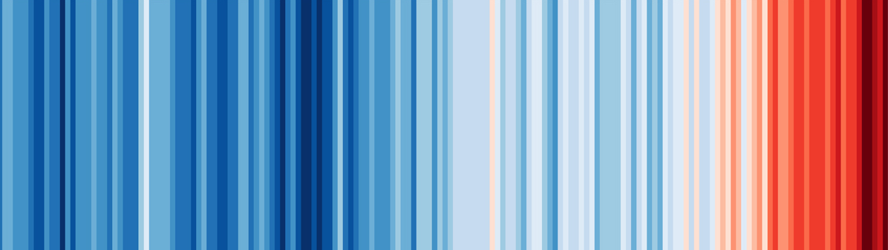
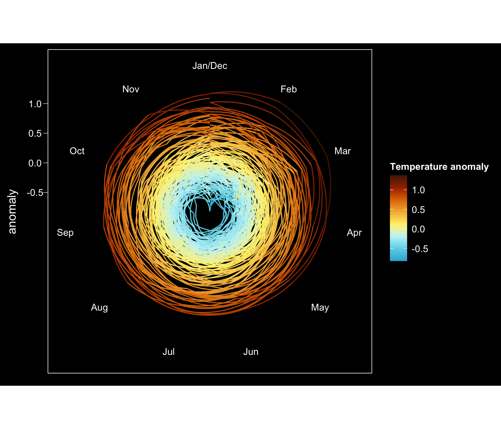
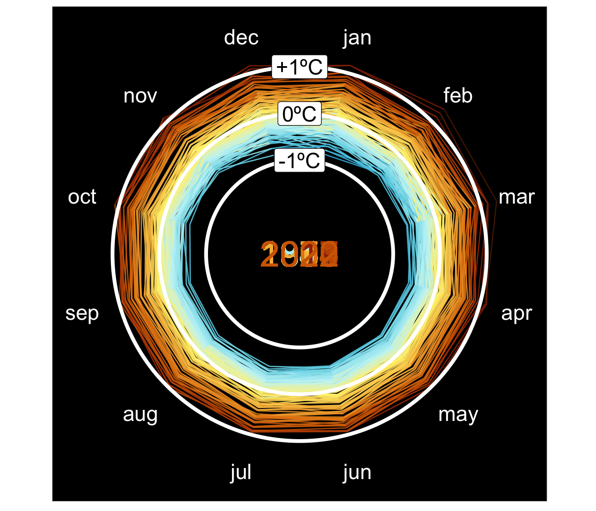

# load packages
library(tidyverse)
library(gganimate) # remotes::install_github('thomasp85/gganimate@v1.0.7')
library(janitor)
library(MetBrewer)
library(ggforce)Introduction
Climate change is happening, and changes in average temperatures are happening quickly. The 5 hottest years on record have occurred in the last six years for which we have data. One of the best ways to demonstrate climate warming is through data visualisations, and one of the best examples of this are Ed Hawkins’ climate stripes.

This visualisation is made up of vertical stripes, each representing the average temperature for a single year, relative to the average temperature over the whole period (from 1880 to the most recent year for which we have data). Blue colours indicate cooler-than-average years, while red colours indicate years that were hotter than average. As you can see, the increasing redness on the right-hand side of the graphic shows the rapid heating over recent years.
I love the simplicity of this graphic, and it has proved a very effective tool for improving people’s awareness of climate warming (see the #climatestripes for amazing examples of its use across the world).
I also loved the climate spiral animation created by Ed and re-created by NASA to help people understand the concept of global warming and the change in global temperatures over time. The spiral presents a visual representation of temperature changes over the past century or more, by showing a line that spirals outwards from the center of the graph as time progresses.
In the centre of the spiral is the average temperature of a baseline period, typically the 20th century average. As the line moves outwards, the temperature increases, with each full rotation of the spiral representing one year of data. The thickness of the line represents the magnitude of the temperature change in each year, with thicker lines indicating larger temperature increases.
Having played with ggplot2 and gganimate a bit, I was interested if I could recreate this animation in R (unfortunately without the amazing axis flip at the end)!
Make the climate spiral in R
At the time of writing this blog post, using gganimate for geom_path() and transition_reveal() is unfortunately bugged in version 1.0.8, meaning that some frames would be missing. As such we will install a previous version (1.0.7).
This post will walkthrough how to recreate Ed Hawkins’ famous climate spiral in R. We will mainly use the tidyverse packages and gganimate to do this. Firstly we will load in these required packages.
We can next load in the dataset used from the NASA website.
# load in dataset from NASA
d <- read.csv('https://data.giss.nasa.gov/gistemp/tabledata_v4/GLB.Ts+dSST.csv', skip = 1)
head(d) Year Jan Feb Mar Apr May Jun Jul Aug Sep Oct Nov Dec J.D D.N
1 1880 -0.18 -.24 -.09 -.16 -.10 -.21 -.18 -.10 -.15 -.23 -.22 -.17 -.17 ***
2 1881 -0.19 -.14 .03 .05 .06 -.18 .00 -.03 -.15 -.22 -.18 -.07 -.09 -.09
3 1882 0.16 .14 .04 -.16 -.14 -.22 -.17 -.08 -.15 -.23 -.17 -.36 -.11 -.09
4 1883 -0.29 -.37 -.12 -.18 -.18 -.07 -.07 -.14 -.22 -.11 -.24 -.11 -.18 -.20
5 1884 -0.13 -.08 -.36 -.40 -.34 -.35 -.30 -.28 -.27 -.25 -.33 -.31 -.28 -.27
6 1885 -0.58 -.33 -.26 -.42 -.45 -.43 -.34 -.31 -.28 -.23 -.24 -.10 -.33 -.35
DJF MAM JJA SON
1 *** -.11 -.16 -.20
2 -.17 .05 -.07 -.18
3 .08 -.08 -.16 -.18
4 -.34 -.16 -.10 -.19
5 -.11 -.37 -.31 -.28
6 -.41 -.38 -.36 -.25This dataset has month across the top with some other columns I do not necessarily understand, and the values in the month columns are the temperature anomaly. Right now all the columns have been read in character format, so we can do some data wrangling to get the data in the correct format for ggplot2. This includes going from wide to long format, stacking all the months on top of each other in a single column.
These commands could all be linked together using successive pipe commands, but I kept them separate to better document what each line is doing.
# wrangle the data set
# make all columns numeric - there are some *** that i dont know what they mean
d <- mutate(d, across(everything(), as.numeric))
# replace NAs with 0 - just make them to have no positive or negative anomaly
d <- mutate(d, across(everything(), ~(replace_na(.x, 0))))
# tidy the dataframe
d <- janitor::clean_names(d) %>%
pivot_longer(cols = jan:dec, names_to = 'month', values_to = 'anomaly')
# add a time column
d <- mutate(d, time = paste(year, toupper(month), sep = '-'),
time = lubridate::ym(time),
month2 = lubridate::month(time)) %>%
# select only necessary columns
select(year, month, month2, time, anomaly)
# look at dataset
head(d)# A tibble: 6 × 5
year month month2 time anomaly
<dbl> <chr> <dbl> <date> <dbl>
1 1880 jan 1 1880-01-01 -0.18
2 1880 feb 2 1880-02-01 -0.24
3 1880 mar 3 1880-03-01 -0.09
4 1880 apr 4 1880-04-01 -0.16
5 1880 may 5 1880-05-01 -0.1
6 1880 jun 6 1880-06-01 -0.21The most recent data in the spreadsheet from 2023, but we will remove this at the moment because it is mid-year.
# remove 2023
d <- filter(d, year < 2023)We are now ready to make our first plot. I have chosen a MetBrewer colour palette which goes from blue to red to represent the hot and cold colours. For the plot I will use a theme I defined previously in a random R package called theme_black() (lots of other themes are available).
# create first plot
p1 <- ggplot(d, aes(month2, anomaly, col = anomaly)) +
geom_line(aes(group = year)) +
scale_color_gradientn('Temperature anomaly', colors = met.brewer(name='Homer1', direction=-1, override.order = FALSE)) +
MicrobioUoE::theme_black() +
theme(panel.grid.major = element_blank(),
axis.title.x = element_blank()) +
scale_x_continuous(breaks = 1:12, labels = c('Jan', 'Feb', 'Mar', 'Apr', 'May', 'Jun', 'Jul', 'Aug', 'Sep', 'Oct', 'Nov', 'Dec'))
p1 + coord_polar()
This is looking quite good, but still quite far from the polished version on NASA’s YouTube. One of the problems we have is that geom_path() will not cross over the 0-360 line when using coord_polar(). This would ruin the whole visualisation and prevent us having a smooth transition from year to year. This was a problem I was not clever enough to solve, but luckily StackOverflow had the answer. We need to convert the polar coordinates to cartesian to allow the animation to go from December to January of the next year.
# want to convert polar coordinates to cartesian to allow animation to go from December back to January
# using this link https://stackoverflow.com/questions/55132352/geom-path-refuses-to-cross-over-the-0-360-line-in-coord-polar
# calculate angles for each month, starting with January at 15º
angles <- tibble(month = unique(d$month),
angle = seq(15, by = 30, length.out = 12))
d <- left_join(d, angles)
head(d)# A tibble: 6 × 6
year month month2 time anomaly angle
<dbl> <chr> <dbl> <date> <dbl> <dbl>
1 1880 jan 1 1880-01-01 -0.18 15
2 1880 feb 2 1880-02-01 -0.24 45
3 1880 mar 3 1880-03-01 -0.09 75
4 1880 apr 4 1880-04-01 -0.16 105
5 1880 may 5 1880-05-01 -0.1 135
6 1880 jun 6 1880-06-01 -0.21 165# add buffer to make everything positive - this can be anything really
buffer <- 3
# calculate the position in x/y space for each anomaly using maths!!!
d <- mutate(d, x_anomaly = sin(pi * angle/180) * (anomaly + buffer),
y_anomaly = cos(pi * angle/180) * (anomaly + buffer))
head(d)# A tibble: 6 × 8
year month month2 time anomaly angle x_anomaly y_anomaly
<dbl> <chr> <dbl> <date> <dbl> <dbl> <dbl> <dbl>
1 1880 jan 1 1880-01-01 -0.18 15 0.730 2.72
2 1880 feb 2 1880-02-01 -0.24 45 1.95 1.95
3 1880 mar 3 1880-03-01 -0.09 75 2.81 0.753
4 1880 apr 4 1880-04-01 -0.16 105 2.74 -0.735
5 1880 may 5 1880-05-01 -0.1 135 2.05 -2.05
6 1880 jun 6 1880-06-01 -0.21 165 0.722 -2.69 We now have the position of each anomaly for each month in x/y space. This should allow the animation to smoothly move between December of one year to January of the next.
Our original plot also does not have very nice labelling to tell us anything about the extent of the anomaly (1ºC above or below average etc.)
However, we can add these ourselves by using some functions from ggforce to create circles on our plot and labelling them. We also create a dataframe to place the months at a nicer place on the plot.
We can control the font size of geom_text() in terms of font size used in the rest of the plot using the pts() function that I copied from Andrew Heiss.
# create limits
limits <- c(-(max(d$anomaly) + buffer), max(d$anomaly) + buffer)
# create circles for some temperatures
circles <- data.frame(
r = c(buffer, buffer + 1, buffer - 1)) %>%
mutate(r = round(r, 0),
x0 = 0,
y0 = 0,
label = c('0ºC', '+1ºC', '-1ºC'))
# create dataset for months to be added to the plot
months <- mutate(angles, anomaly = limits[2] + limits[2] * .1,
x_anomaly = sin(pi * angle/180) * anomaly,
y_anomaly = cos(pi * angle/180) * anomaly)
# increase limits slightly
limits <- limits + limits*.1
# create base plot
p1 <- ggplot(d, aes(x_anomaly, y_anomaly)) +
scale_x_continuous(limits = limits) +
scale_y_continuous(limits = limits) +
ggforce::theme_no_axes() +
theme(panel.background = element_rect(fill = 'black'),
legend.position = 'none') +
geom_text(aes(x_anomaly, y_anomaly, label = month), data = months, col = 'white', size = MicrobioUoE::pts(18)) +
geom_path(aes(col = anomaly), alpha = 0.9) +
scale_color_gradientn('Temperature anomaly', colors = met.brewer(name='Homer1', direction=-1, override.order = F)) +
ggforce::geom_circle(aes(x0 = x0, y0 = y0, r = r, linewidth = I(1.5)), fill = NA, data = circles, inherit.aes = FALSE,col = 'white') +
geom_label(aes(x0, r, label = label), circles, fill = 'white', size = MicrobioUoE::pts(18)) +
coord_equal() +
geom_text(aes(x = 0, y = 0, label = year, col = anomaly), size = MicrobioUoE::pts(30))
p1
This looks great and more like what NASA created. We can easily animate this using gganimate::transition_reveal() and adding the column for time that we created earlier.
We can add a frame for every single row of the dataframe using nframes = nrow(d). We will also add a point to make it more obvious where we are at any given time.
# add animation layer using gganimate
p_anim <- p1 +
geom_point(shape = 21, fill = 'green', data = d, size = 4, col = 'white') +
transition_reveal(time)
# save out the animation
anim_save(filename = 'posts/climate_spiral/climate_spiral.gif', p_anim, nframes = nrow(d), duration = 45, width = 5.5, height = 6, units = 'in', renderer = gifski_renderer(), res = 150)
This looks amazing! There are probably ways I could improve the animation but this suits my motivations right now. For example, I have not linked the size of the line to the extent of the change, but this should be relatively easy to implement.
I generally love this type of visualisation, and the spiral could be used on other data, such as atmospheric carbon dioxide levels or Arctic sea ice extent, to show how these variables have changed through time. By presenting data in this way, the Climate Spiral helps people to understand the steady, consistent increase in global temperatures over time, and the urgency of addressing climate change.
Let me know if you found this helpful and if you any questions!